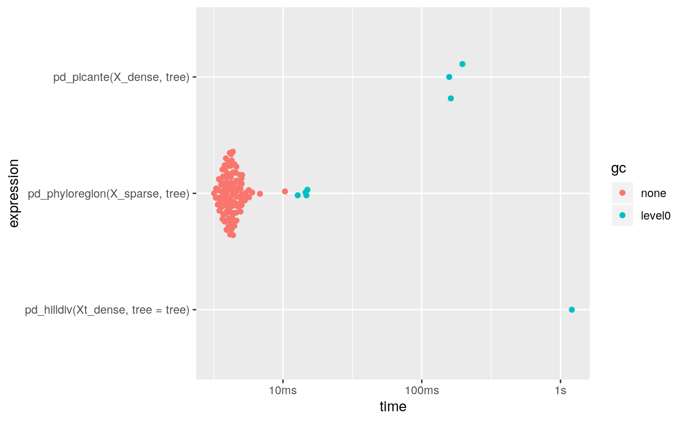
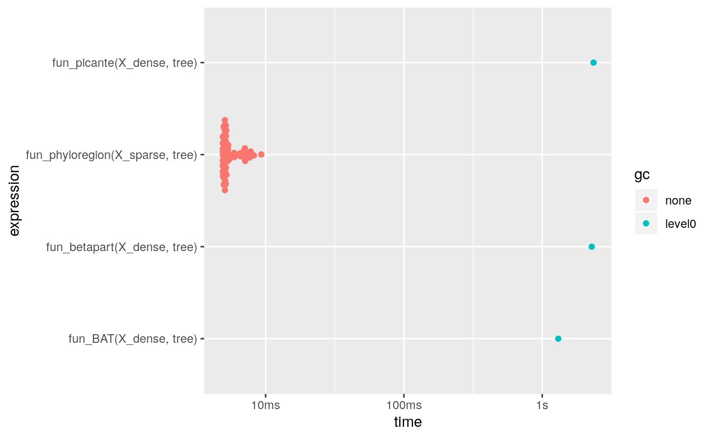

A small benchmark study
In this vignette we will benchmark several common functions for several packages computing phylogenetic diversity (Faith 1992), beta diversity and phylogenetic beta diversity.
Lets load first a all the packages we are going to use.
library(ape)
library(Matrix)
library(bench)
library(ggplot2)
# packages we benchmark
library(phyloregion)##
## Attaching package: 'phyloregion'## The following objects are masked from 'package:base':
##
## colSums, rowSums## Loading required package: vegan## Loading required package: permute## Loading required package: lattice## This is vegan 2.5-6## Loading required package: nlme## Registered S3 methods overwritten by 'huge':
## method from
## plot.sim BDgraph
## print.sim BDgraph## Registered S3 method overwritten by 'geiger':
## method from
## unique.multiPhylo ape##
## Attaching package: 'BAT'## The following object is masked from 'package:betapart':
##
## beta.multi## The following object is masked from 'package:ggplot2':
##
## alpha## The following object is masked from 'package:base':
##
## betaWe will use a small data set which comes with phyloregion.
data(africa)
# subset matrix
X_sparse <- africa$comm[1:30, ]
X_sparse <- X_sparse[, colSums(X_sparse)>0]
X_dense <- as.matrix(X_sparse)
Xt_dense <- t(X_dense)
object.size(X_sparse)## 76504 bytes## 134752 bytes## [1] 30 401To compare results and start the analysis often we need to reformat the input or results. E.g. for the hilldiv package the community matrix needs to be transposed. These transformations influence the timings usually only marginal. For the benchmarking we use the package bench as it returns timings and provides some information about memory allocations.
Beta diversity
For beta diversity there is only a small advantage:
chk_fun <- function(target, current)
all.equal(target, current, check.attributes = FALSE)
fun_phyloregion <- function(x) as.matrix(phyloregion::beta_diss(x)[[3]])
fun_betapart <- function(x) as.matrix(betapart::beta.pair(x)[[3]])
fun_vegan <- function(x) as.matrix(vegan::vegdist(x, binary=TRUE))
fun_BAT <- function(x) as.matrix(BAT::beta(x, func = "Soerensen")[[1]])
results <- bench::mark(fun_phyloregion(X_sparse), fun_betapart(X_dense),
fun_vegan(X_dense), fun_BAT(X_dense), check=chk_fun)## Warning: Some expressions had a GC in every iteration; so filtering is disabled.## Warning: Some expressions had a GC in every iteration; so filtering is disabled.## Registered S3 method overwritten by 'cli':
## method from
## print.boxx spatstat## # A tibble: 4 x 6
## expression min median `itr/sec` mem_alloc `gc/sec`
## <bch:expr> <bch:tm> <bch:tm> <dbl> <bch:byt> <dbl>
## 1 fun_phyloregion(X_sparse) 986.9µs 1.51ms 578. 591.94KB 8.00
## 2 fun_betapart(X_dense) 1ms 1.35ms 392. 601.23KB 11.6
## 3 fun_vegan(X_dense) 934.2µs 1.37ms 532. 1.02MB 26.0
## 4 fun_BAT(X_dense) 73.2ms 77.46ms 12.8 31.76MB 23.8## Loading required namespace: tidyr
Phylogenetic diversity (Faith 1992)
The is a large difference in memory allocations and running time for Faith’s phylogenetic diversity.
tree <- africa$phylo
tree <- keep.tip(tree, colnames(X_sparse))
pd_picante <- function(x, tree){
res <- picante::pd(x, tree)[,1]
names(res) <- row.names(x)
res
}
pd_hilldiv <- function(x, tree) hilldiv::index_div(x, tree, index="faith")
pd_phyloregion <- function(x, tree) phyloregion::PD(x, tree)
results <- bench::mark(pd_picante(X_dense, tree),
pd_hilldiv(Xt_dense,tree=tree),
pd_phyloregion(X_sparse, tree))## Warning: Some expressions had a GC in every iteration; so filtering is disabled.## Warning: Some expressions had a GC in every iteration; so filtering is disabled.## # A tibble: 3 x 6
## expression min median `itr/sec` mem_alloc
## <bch:expr> <bch:tm> <bch:tm> <dbl> <bch:byt>
## 1 pd_picante(X_dense, tree) 157.65ms 161.94ms 5.82 59.5MB
## 2 pd_hilldiv(Xt_dense, tree = tree) 1.21s 1.21s 0.829 170.22MB
## 3 pd_phyloregion(X_sparse, tree) 3.19ms 4.22ms 213. 1.73MB
## # … with 1 more variable: `gc/sec` <dbl>
Phylogenetic beta diversity
Again there is a large difference in memory allocations and running time for the phylogenetic beta diversity.
fun_phyloregion <- function(x, tree) phylobeta(x, tree)[[3]]
fun_betapart <- function(x, tree) phylo.beta.pair(x, tree)[[3]]
fun_picante <- function(x, tree) 1- phylosor(x, tree)
fun_BAT <- function(x, tree) beta(x, tree, func = "Soerensen")[[1]]
chk_fun <- function(target, current)
all.equal(target, current, check.attributes = FALSE)
results <- bench::mark(fun_picante(X_dense, tree),
fun_betapart(X_dense, tree),
fun_BAT(X_dense, tree),
fun_phyloregion(X_sparse, tree), check=chk_fun)## Warning: Some expressions had a GC in every iteration; so filtering is disabled.## Warning: Some expressions had a GC in every iteration; so filtering is disabled.## # A tibble: 4 x 6
## expression min median `itr/sec` mem_alloc `gc/sec`
## <bch:expr> <bch:tm> <bch:tm> <dbl> <bch:byt> <dbl>
## 1 fun_picante(X_dense, tree) 2.35s 2.35s 0.426 1.24GB 0.851
## 2 fun_betapart(X_dense, tree) 2.28s 2.28s 0.438 1.24GB 1.31
## 3 fun_BAT(X_dense, tree) 1.31s 1.31s 0.766 207.39MB 0.766
## 4 fun_phyloregion(X_sparse, tree) 4.9ms 5.16ms 177. 1.16MB 0 Note that the picante function returns a similarity matrix while the function in betapart and phyloregion return a dissimilarity matrix.
Session Infomation
## R version 3.6.2 (2019-12-12)
## Platform: x86_64-pc-linux-gnu (64-bit)
## Running under: Debian GNU/Linux 10 (buster)
##
## Matrix products: default
## BLAS: /usr/lib/x86_64-linux-gnu/openblas/libblas.so.3
## LAPACK: /usr/lib/x86_64-linux-gnu/libopenblasp-r0.3.5.so
##
## locale:
## [1] LC_CTYPE=en_US.UTF-8 LC_NUMERIC=C
## [3] LC_TIME=en_US.UTF-8 LC_COLLATE=en_US.UTF-8
## [5] LC_MONETARY=en_US.UTF-8 LC_MESSAGES=en_US.UTF-8
## [7] LC_PAPER=en_US.UTF-8 LC_NAME=C
## [9] LC_ADDRESS=C LC_TELEPHONE=C
## [11] LC_MEASUREMENT=en_US.UTF-8 LC_IDENTIFICATION=C
##
## attached base packages:
## [1] stats graphics grDevices utils datasets methods base
##
## other attached packages:
## [1] microbenchmark_1.4-7 BAT_2.0.0 hilldiv_1.5.1
## [4] picante_1.8 nlme_3.1-144 vegan_2.5-6
## [7] lattice_0.20-38 permute_0.9-5 betapart_1.5.1
## [10] phyloregion_0.1.0 ggplot2_3.2.1 bench_1.1.1.9000
## [13] Matrix_1.2-18 ape_5.3
##
## loaded via a namespace (and not attached):
## [1] backports_1.1.5 Hmisc_4.3-0 BDgraph_2.62
## [4] fastmatch_1.1-0 plyr_1.8.5 igraph_1.2.4.2
## [7] lazyeval_0.2.2 sp_1.3-2 splines_3.6.2
## [10] crosstalk_1.0.0 digest_0.6.23 htmltools_0.4.0
## [13] fansi_0.4.1 magrittr_1.5 checkmate_2.0.0
## [16] memoise_1.1.0 tensor_1.5 cluster_2.1.0
## [19] ks_1.11.6 fastcluster_1.1.25 pkgdown_1.4.1
## [22] pdist_1.2 prettyunits_1.1.1 jpeg_0.1-8.1
## [25] colorspace_1.4-1 xfun_0.12 dplyr_0.8.4
## [28] crayon_1.3.4 jsonlite_1.6.1 spatstat.data_1.4-3
## [31] spatstat_1.63-0 survival_3.1-8 phangorn_2.6.0
## [34] glue_1.3.1 polyclip_1.10-0 gtable_0.3.0
## [37] geiger_2.0.6.4 webshot_0.5.2 maps_3.3.0
## [40] ggm_2.3 abind_1.4-5 scales_1.1.0
## [43] mvtnorm_1.0-12 miniUI_0.1.1.1 Rcpp_1.0.3
## [46] xtable_1.8-4 progress_1.2.2 htmlTable_1.13.3
## [49] magic_1.5-9 foreign_0.8-72 subplex_1.5-4
## [52] mclust_5.4.5 deSolve_1.27.1 Formula_1.2-3
## [55] stats4_3.6.2 htmlwidgets_1.5.1 RColorBrewer_1.1-2
## [58] lavaan_0.6-5 acepack_1.4.1 farver_2.0.3
## [61] pkgconfig_2.0.3 deldir_0.1-25 nnet_7.3-12
## [64] utf8_1.1.4 tidyselect_1.0.0 rlang_0.4.4
## [67] manipulateWidget_0.10.0 reshape2_1.4.3 later_1.0.0
## [70] munsell_0.5.0 tools_3.6.2 cli_2.0.1
## [73] fdrtool_1.2.15 evaluate_0.14 geometry_0.4.5
## [76] stringr_1.4.0 fastmap_1.0.1 goftest_1.2-2
## [79] yaml_2.2.1 knitr_1.28 fs_1.3.1
## [82] rgl_0.100.30 purrr_0.3.3 glasso_1.11
## [85] pbapply_1.4-2 whisker_0.4 mime_0.9
## [88] profmem_0.5.0 compiler_3.6.2 rstudioapi_0.10
## [91] beeswarm_0.2.3 png_0.1-7 e1071_1.7-3
## [94] ggsignif_0.6.0 spatstat.utils_1.15-0 huge_1.3.4
## [97] tibble_2.1.3 pbivnorm_0.6.0 stringi_1.4.5
## [100] qgraph_1.6.4 desc_1.2.0 rgeos_0.5-2
## [103] psych_1.9.12.31 vctrs_0.2.2 pillar_1.4.3
## [106] lifecycle_0.1.0 data.table_1.12.8 corpcor_1.6.9
## [109] raster_3.0-12 httpuv_1.5.2 R6_2.4.1
## [112] latticeExtra_0.6-29 promises_1.1.0 KernSmooth_2.23-16
## [115] gridExtra_2.3 vipor_0.4.5 codetools_0.2-16
## [118] rcdd_1.2-2 MASS_7.3-51.4 gtools_3.8.1
## [121] assertthat_0.2.1 rprojroot_1.3-2 rjson_0.2.20
## [124] withr_2.1.2 mnormt_1.5-6 mgcv_1.8-31
## [127] parallel_3.6.2 hms_0.5.3 quadprog_1.5-8
## [130] grid_3.6.2 rpart_4.1-15 tidyr_1.0.2
## [133] coda_0.19-3 class_7.3-15 nls2_0.2
## [136] rmarkdown_2.1 FSA_0.8.27 hypervolume_2.0.12
## [139] d3Network_0.5.2.1 ggpubr_0.2.4 shiny_1.4.0
## [142] base64enc_0.1-3 ggbeeswarm_0.6.0